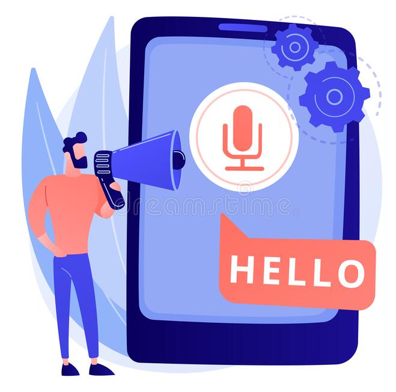

Demo: Speech to Text

Click on the button and Start Speaking with Mic
[Sample Speech]
Speech-to-Text is used daily by students, teachers, writers, bloggers around the world.
It will assist you in minimizing your writing efforts significantly.